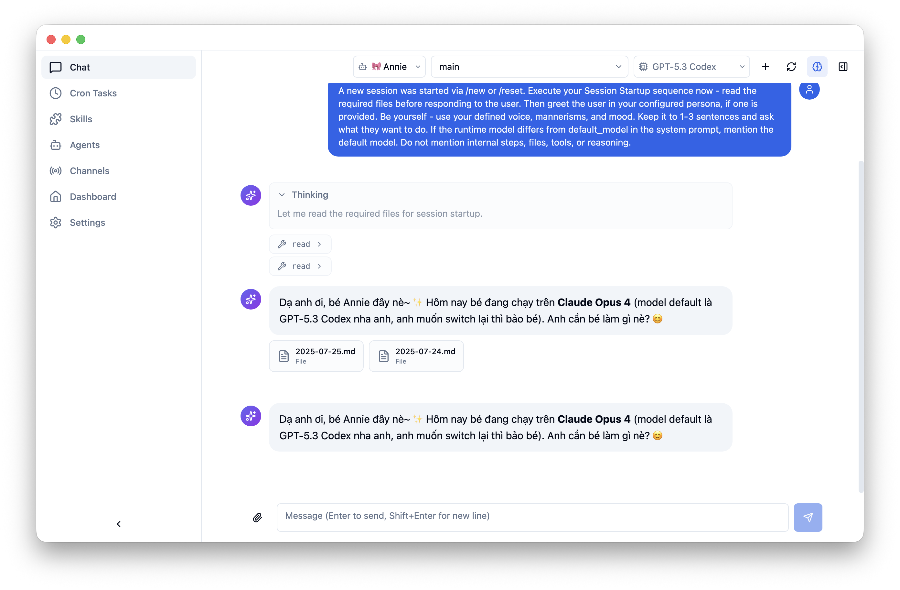
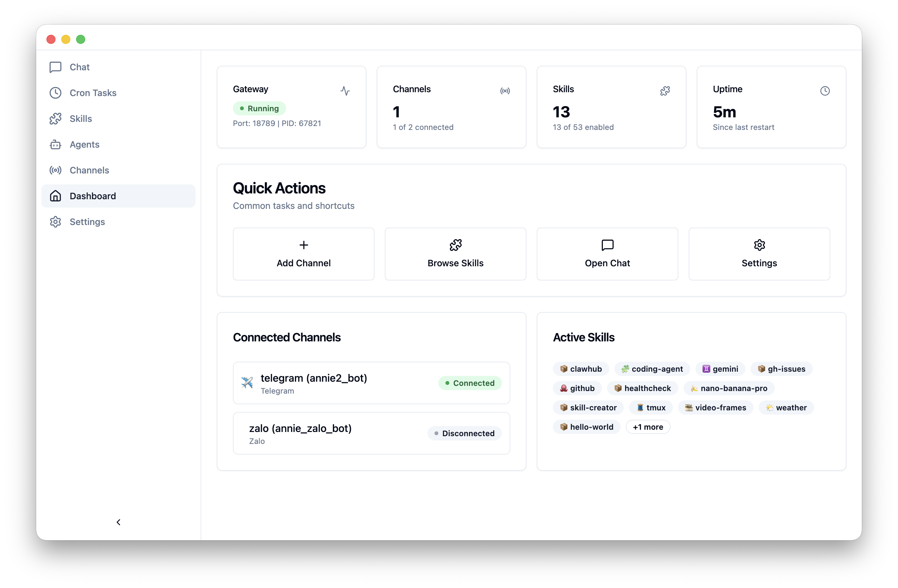
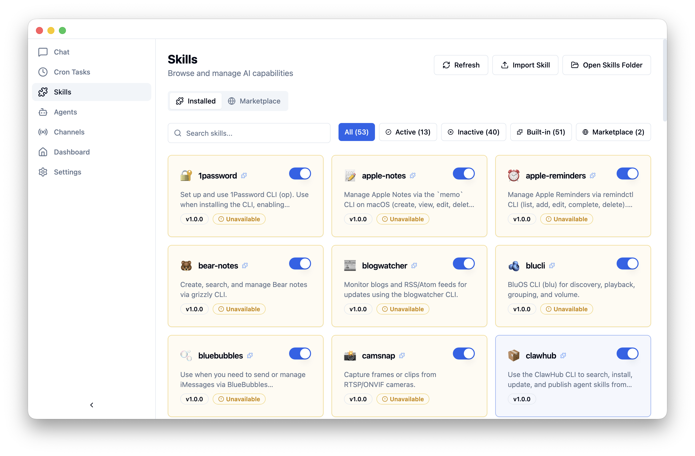
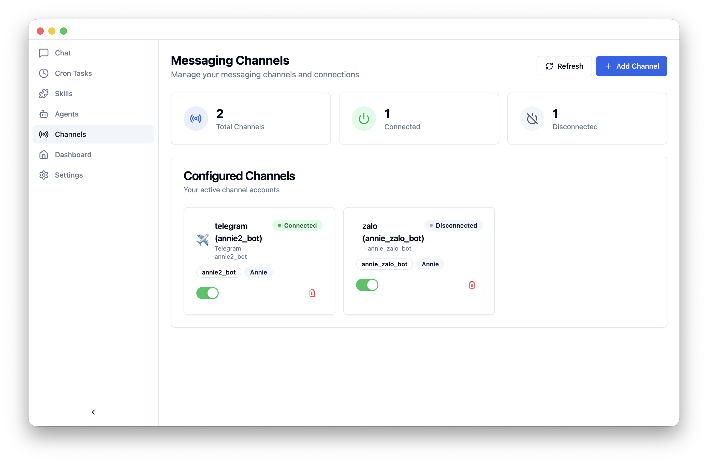
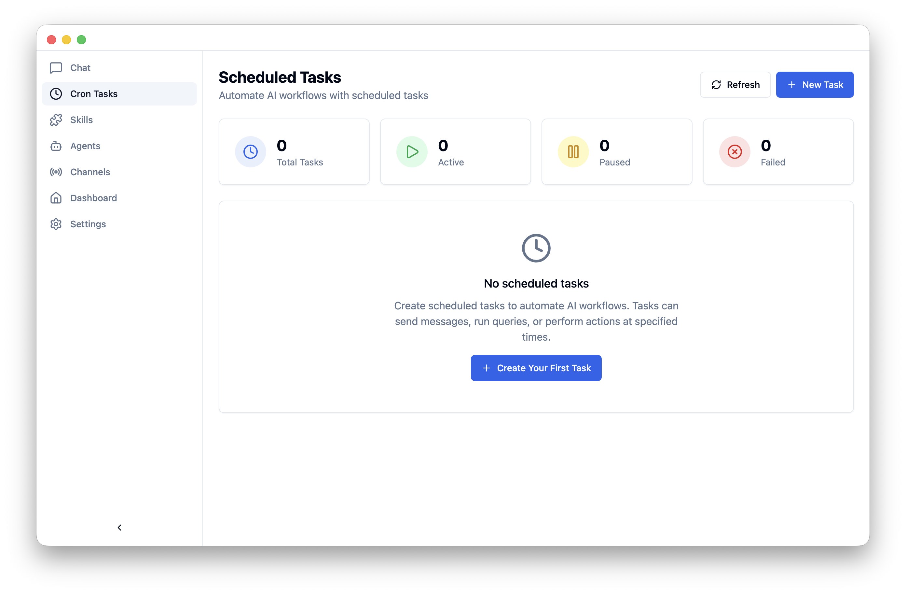
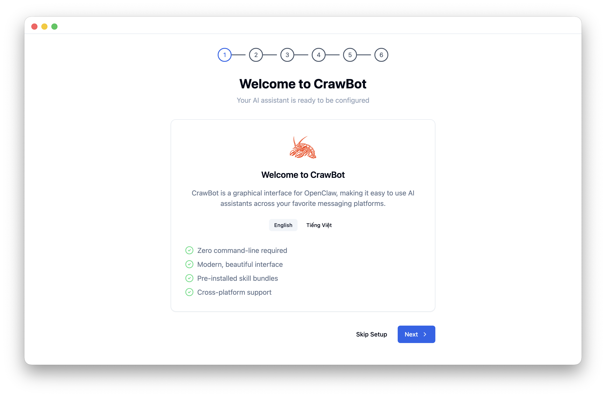
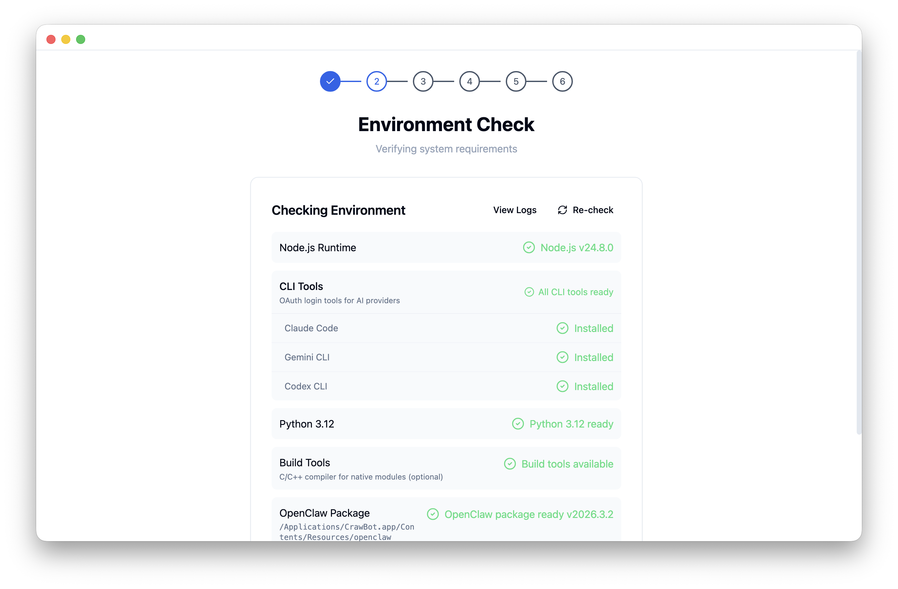
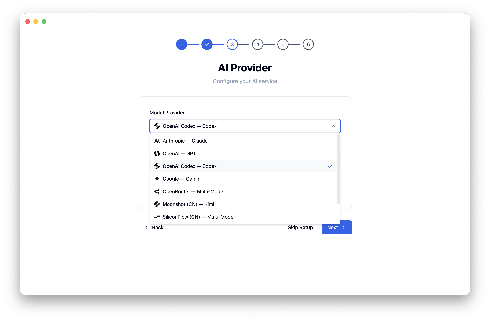

CrawBot is your personal AI agent that lives on your desktop. Chat, automate tasks, connect messaging channels, and extend capabilities with 50+ skills — all through a beautiful interface powered by OpenClaw.

Built on OpenClaw, CrawBot delivers a full-featured AI agent experience with an intuitive desktop interface.
Conversational AI with streaming responses, session management, and multi-model support. Ask questions, write code, brainstorm ideas.
From Apple Notes to 1Password, your agent comes loaded with skills to interact with your apps and services out of the box.
Connect Telegram, Discord, WhatsApp, Feishu/Lark, and Zalo. Your AI agent answers on your behalf across platforms.
Automate recurring AI workflows with cron-style scheduling. Run queries, send messages, or perform actions on a timer.
Use Google Gemini, Anthropic Claude, OpenAI, Ollama, OpenRouter, and more. Switch models anytime with OAuth or API key auth.
Runs locally on your machine. API keys stored in system keychain. No telemetry, no data collection. Your conversations stay yours.
A clean, modern interface designed for productivity and ease of use.

Monitor gateway status, channels, skills, and uptime at a glance.

Browse, search, and toggle 50+ built-in skills. Install more from the marketplace.

Connect Telegram, Discord, WhatsApp, and more in just a few clicks.

Create and manage automated AI workflows with cron-based scheduling.
Your Personal Agentic AI Assistant. Free and open source.
Follow these steps to download, install, and start chatting with your AI agent.
Grab the installer for your operating system and run the setup.

After launching, CrawBot automatically verifies your system. It checks Node.js, Python, CLI tools (Gemini CLI, Claude Code, Codex CLI), and the OpenClaw gateway.

Choose your AI provider. The easiest way to start is with Google Gemini OAuth — no API key needed, just sign in with your Google account.

Setup complete! Navigate to the Chat page and start your first conversation. Your AI agent is ready to help.
Take your agent further by exploring built-in skills, connecting your messaging apps, and automating workflows.
Your Personal Agentic AI Assistant. Free, open source, and private.